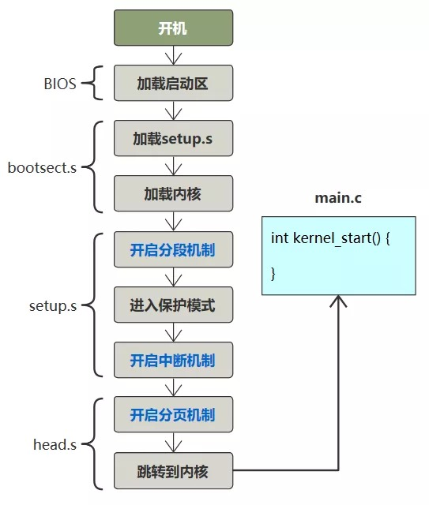
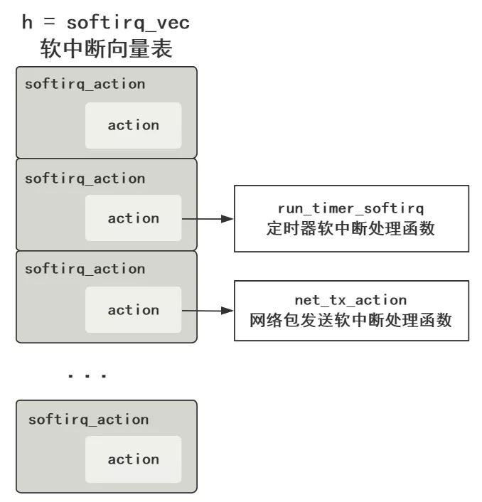
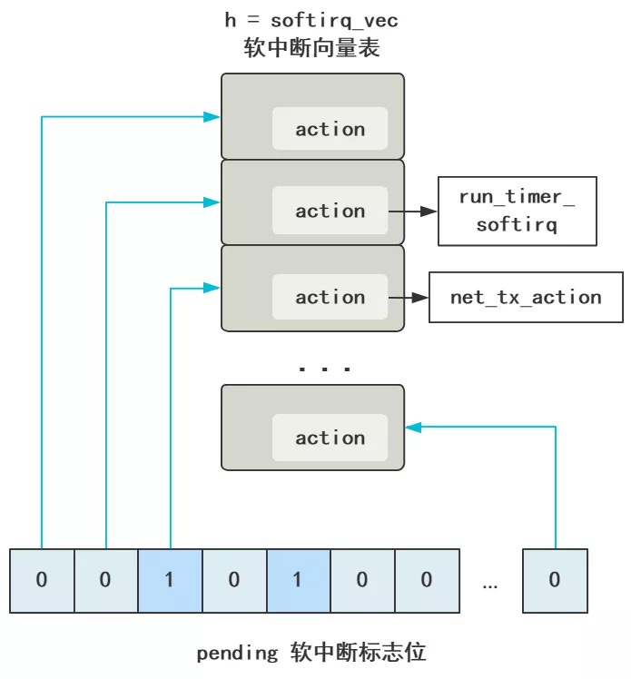
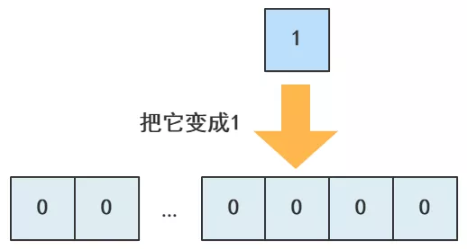
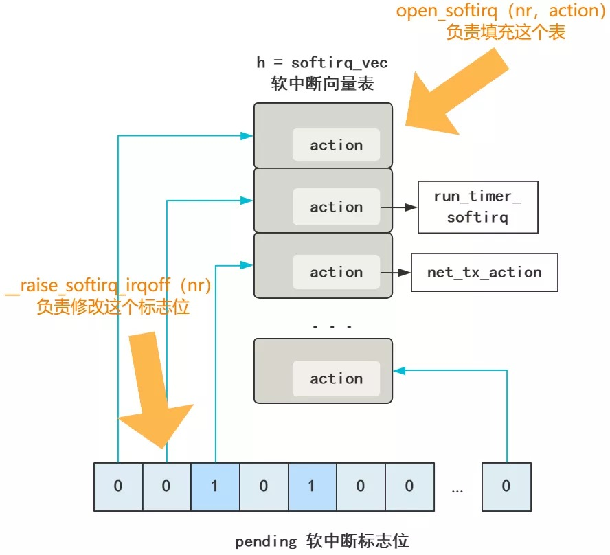
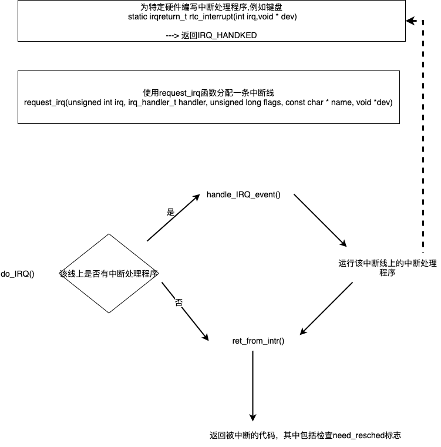

概述
- 本篇文档总结软中断相关知识
软中断和硬中断的区别
硬中断包括中断、异常以及INT 指令这种软件中断，整个中断机制是纯硬件实现的逻辑，别管触发它的是谁，所以通通叫硬中断。
宏观层面
软中断是纯软件实现的，宏观效果看上去和中断差不多的一种方式。 什么叫宏观效果呢？意思就是说，中断在宏观层面看来，就是打断当前正在运行的程序，转而去执行中断处理程序，执行完之后再返回原程序。
从这个层面看，硬中断可以达到这个效果，软中断也可以达到这个效果，所以说宏观效果一样。 那微观层面呢？就是我们需要了解的原理啦。
微观层面
-
硬中断的微观层面，就是 CPU 在每一个指令周期的最后，都会留一个 CPU 周期去查看是否有中断，如果有，就把中断号取出，去中断向量表中寻找中断处理程序，然后跳过去。
-
软中断的微观层面，简单说就是有一个单独的守护进程，不断轮询一组
标志位，如果哪个标志位有值了，那去这个标志位对应的软中断向量表数组的相应位置，找到软中断处理函数，然后跳过去。
软中断实现原理
- 既然是内核守护线程来运行软中断处理程序, 那么首先要开启内核线程
开启内核软中断处理的守护线程

这个是我之前在讲解自制操作系统时的图，放在这里完全没有问题，这就是 Linux 的启动过程，文件名都一样。
唯一不同的是，我们这里内核主方法叫 kernel_start，Linux-2.6.0 里叫 start_kernel, 效果都一样.
接下来看这个入口方法。
asmlinkage void __init start_kernel(void) {
...
trap_init();
sched_init();
time_init();
...
rest_init();
}
省略了很多部分，但可以看出这个方法里就是各种初始化。
接着看 rest_init() 这个方法。
static void rest_init(void) {
kernel_thread(init, NULL, CLONE_KERNEL);
}
static int init(void * unused) {
do_pre_smp_initcalls();
}
static void do_pre_smp_initcalls(void) {
spawn_ksoftirqd();
}
看到一个 spawn_ksoftirqd()，翻译过来就是 spawn kernel soft irt daemon，开启内核软中断守护进程，这名字太直观了，都不用我讲了！
再往里跟。很长，但有用的信息很少。
__init int spawn_ksoftirqd(void) {
cpu_callback(&cpu_nfb, CPU_ONLINE, (void *)(long)smp_processor_id());
register_cpu_notifier(&cpu_nfb);
return 0;
}
static int __devinit cpu_callback(...) {
kernel_thread(ksoftirqd, hcpu, CLONE_KERNEL);
}
static int ksoftirqd(void * __bind_cpu) {
for (;;) {
while (local_softirq_pending()) {
do_softirq();
cond_resched();
}
}
}
asmlinkage void do_softirq(void) {
h = softirq_vec;
pending = local_softirq_pending();
do {
if (pending & 1) {
h->action(h);
h++;
pending >>= 1;
} while (pending);
}
前面的不用管，直接看最后一个方法，do_softirq()，这个方法展示了软中断处理守护进程所做的事情的精髓，我给翻译一下。
// 这就是软中断处理函数表（软中断向量表）
// 和硬中断的中断向量表一样
static struct softirq_action softirq_vec[32];
asmlinkage void do_softirq(void) {
// h = 软中断向量表起始地址指针
h = softirq_vec;
// 这个是软中断标志位们，一次性拿到所有的软中断标志位
pending = local_softirq_pending();
do {
// 此时的软中断标志位有值（说明有软中断）
if (pending & 1) {
// 去对应的软中断向量表执行对应的处理函数
h->action(h);
// 软中断向量表指针向后移动
h++;
// 同时软中断处理标志位也向后移动
pending >>= 1;
} while (pending);
}
这翻译还没看明白，那我来几个图你就懂了。
首先 h 代表软中断向量表 softirq_vec，和硬中断的中断向量表的存在是一个目的，就是个数组嘛，然后里面的元素存储着软中断处理程序的地址指针，在 action 中。

然后 pending 代表软中断标志位（们）。
这里完全由于 Linux 里用了好多 C 语言的宏定义搞得很绕，我先放出来，别担心。
typedef struct {
unsigned int __softirq_pending;
unsigned long idle_timestamp;
unsigned int __nmi_count; /* arch dependent */
unsigned int apic_timer_irqs; /* arch dependent */
} irq_cpustat_t;
extern irq_cpustat_t irq_stat[]; /* defined in asm/hardirq.h */
#define __IRQ_STAT(cpu, member) (irq_stat[cpu].member)
#define __IRQ_STAT(cpu, member) ((void)(cpu), irq_stat[0].member)
#define softirq_pending(cpu) __IRQ_STAT((cpu), __softirq_pending)
#define local_softirq_pending() softirq_pending(smp_processor_id())
pending = local_softirq_pending();
把这些宏定义都翻译过来，再去掉多处理器的逻辑，就当只有一个核心，就变得很简单了。
pending = irq_stat[0].__softirq_pending;
它就是个 int 值而已，32 位。
回过头看之前的，pending（软中断标志位）与 h（软中断向量表）的向后移动的步长。
// 软中断向量表指针向后移动
h++;
// 同时软中断处理标志位也向后移动
pending >>= 1;
可以看出软中断标志位的一位对应着软中断向量表中的一个元素，这就不难理解为什么中断向量表这个数组大小是 32 位了。

好了，这样这个内核软中断处理这个守护进程做的事，就完全搞懂了。
就是不断遍历 pending 这个软中断标志位的每一位，如果是 0 就忽略，如果是 1，那从上面的 h 软中断向量表中找到对应的元素，然后执行 action 方法，action 就对应着不同的软中断处理函数。
而且也能看到，内核软中断处理守护进程，在 Linux 启动后，会自动跑起来，那也就代表了，软中断机制生效了。 如果让你使用这个内核功能，做软中断的事情，那不难想象，很简单。
-
第一步，
注册软中断向量表，其实就是把软中断向量表的每个 action 变量赋值，相当于硬中断中注册中断向量表的过程。 -
第二步，
触发一个软中断，其实就是修改 pending 的某个标志位，触发一次软中断，相当于硬中断中由外部硬件、异常、或者 INT 指令来触发硬中断一样。 而实际上，Linux 就是这样做的，和我们猜的一样，我们一步步看。
注册中断向量表
就是给 softirq_vec 这个软中断向量表，也是一个数组，里面的每一个元素的 action 附上值，赋的就是软中断处理函数的函数地址。
这代码很容易就可以想到，太好写了，就这样呗。
softirq_vec[0].action = NULL;
softirq_vec[1].action = run_timer_softirq;
softirq_vec[2].action = net_tx_action;
...
softirq_vec[31].action = xxx;
没错，就是这样，不要以为 Linux 有啥神奇的操作，也是得这样老老实实给他们赋值。 比如，网络子系统的初始化，有一步就需要注册网络的软中断处理函数。
subsys_initcall(net_dev_init);
static int __init net_dev_init(void) {
...
// 网络发包的处理函数
open_softirq(NET_TX_SOFTIRQ, net_tx_action, NULL);
// 网络收包的处理函数
open_softirq(NET_RX_SOFTIRQ, net_rx_action, NULL);
...
}
void open_softirq(int nr, void (*action)(struct softirq_action*), void *data)
{
softirq_vec[nr].data = data;
// 简直完全一样
softirq_vec[nr].action = action;
}
这和我们写的不能说是相似，简直完全是一样呀，只是多包装了一层函数叫 open_softirq 方便调用罢了。
NET_TX_SOFTIRQ 这些是枚举值，具体看这些枚举也会发现 Linux-2.6.0 中也不多。
enum
{
HI_SOFTIRQ=0,
TIMER_SOFTIRQ,
NET_TX_SOFTIRQ,
NET_RX_SOFTIRQ,
SCSI_SOFTIRQ,
TASKLET_SOFTIRQ
};
好奇翻了下 Linux-5.11，发现也不多
enum
{
HI_SOFTIRQ=0,
TIMER_SOFTIRQ,
NET_TX_SOFTIRQ,
NET_RX_SOFTIRQ,
BLOCK_SOFTIRQ,
IRQ_POLL_SOFTIRQ,
TASKLET_SOFTIRQ,
SCHED_SOFTIRQ,
HRTIMER_SOFTIRQ,
RCU_SOFTIRQ,
NR_SOFTIRQS
};
触发一次软中断
同上，这代码也很容易就可以想到，就这样呗。 你看，表示软中断标志位的 p 不是这样取值的么。
pending = local_softirq_pending();
取出来的是个 32 位的 int 值。
那只需要把 local_softirq_pending() 对应的标志位改成 1就触发了软中断了，比如我们想触发一个 2 号软中断，就像这样。

代码这么写就行了。
local_softirq_pending() |= 1UL << 2;
而 Linux 居然也是这么做的，我们看网络数据包到来之后，有一段代码。
#define __raise_softirq_irqoff(nr) \
do { local_softirq_pending() |= 1UL << (nr); } while (0)
static inline void __netif_rx_schedule(struct net_device *dev) {
list_add_tail(&dev->poll_list, &__get_cpu_var(softnet_data).poll_list);
// 发出软中断
__raise_softirq_irqoff(NET_RX_SOFTIRQ);
}
如果把 do while(0) 这种 C 语言宏定义的一种玩法去掉，其实就和我们的完全一样了，这回可真的是完全一样。
static inline void __netif_rx_schedule(struct net_device *dev) {
list_add_tail(&dev->poll_list, &__get_cpu_var(softnet_data).poll_list);
// 发出软中断
local_softirq_pending() |= 1UL << (NET_RX_SOFTIRQ)
}
所以我之前总是说，当你真的去接触这个东西的时候，一个个细节逐步拨开后，会发现一点也不难，而且都是顺理成章，和我们猜测的也一样。
小结
- 软中断没什么神奇的骚操作，
就是一组一位一位的软中断标志位，对应着软中断向量表中一个一个的中断处理函数，然后有个内核守护进程不断去循环判断调用，而已。 - 然后，由各个子系统调用
open_softirq负责把软中断向量表附上值。 - 再由各个需要触发软中断的地方调用
raise_softirq_irqoff修改中断标志位的值。 - 后面的工作就交给内核那个软中断守护进程，去触发这个软中断了，其实就是个遍历并查找对应函数的简单过程。

中断的上半部和下半部
-
中断的上半部是在具体irq号完全禁止的状态下执行的, 下半部则不是. 下半部由多种实现方式, 例如: 软中断、tasklet、workqueue, 只有workqueue是在进程上下文中执行, 可以睡眠和被重新调度, 而软中断和tasklet是不能睡眠的.
-
上半部核心函数是
do_irq()函数,每次调用do_irq()函数时，传入了CPU当前寄存器的状态.unsigned do_IRQ(struct pt_regs regs)

- 下半部运行时，允许硬中断（例如网卡下半部运行时，又允许其他硬中断了）
- 上半部的中断处理程序中，触发了下半部程序
- 下半部程序都是在do_softirq()函数中运行
- 那么触发后，具体何时运行呢？ 在上半部中断处理程序返回时，或者在ksoftirqd 线程里
- 对于硬件驱动的研发人员，可以用
- request_irq()函数 —> 注册上半部中断处理程序
- 可以用 open_irq()函数 —> 注册下半部中断处理程序
软中断的常用优化技能
- 当你发现软中断占用的CPU利用率比较高时，可以从以下几个方面排查
- 网卡软中断的优化,把中断信号发给不同的CPU，因为默认情况下所有中断都发给了CPU0，导致CPU0被打满。把中断信号发给不同的CPU之后，多个CPU肯定比单个CPU处理起来快，因此性能能够显著提升。
- 硬件CPU功率是否开启最大性能模式. 如果一台机器是节能模式、一台是MaxPerformance模式, 那么在相同业务量的情况下, 节能模式那台的CPU soft irq就会高.
- 高流量redis服务器，并没有把网卡软中断负载均衡到所有CPU上，而是把网卡软中断绑定的NUMA架构中的其中一个节点（例如该节点是4核CPU），然后把redis进程绑定的NUMA架构中的其他节点（例如其他1个节点）